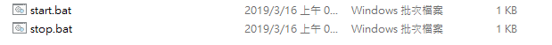
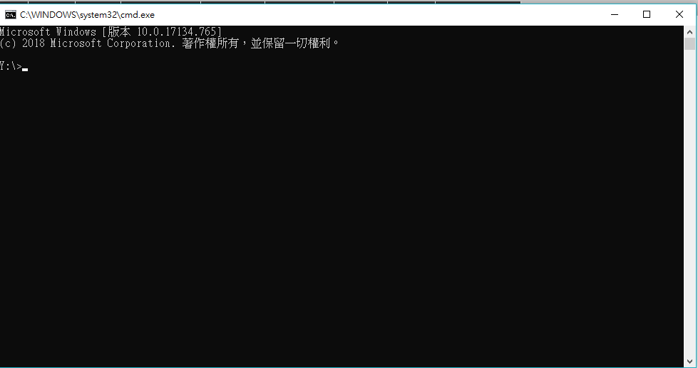

配置可攜程式環境
在個人隨身碟中加入 2019_cad_w5.7z
下載完後進行運用以利編輯個人期末報告以了解其意義
可攜系統:

解壓縮後得到資料夾
使用可攜系統內整合之所有資料便可以在網際內容管理課堂上完成各種內容

點選 Start.bat 開啟設定 在

中進行指令輸入 "dos"指令即可運用磁碟作業系統(Disk Operating System)
當中也可以導入其他指令例如 git 'python 指令諸如此類
基本 DOS 指令可以參考:http://webftp.cogsh.tp.edu.tw/cti573/bcc2012/handout/command.htm
網路設定 << Previous Next >> 查詢電腦網路連線設定